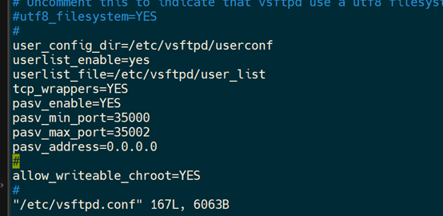

FTP协议
作者:
ACID
2022-03-06 9:45:29
阅读(48)
评论(0)
四、FTP
1. FTP协议
(1) 概念
文件传输协议（FTP）作为网络共享文件的传输协议，在网络应用软件中具有广泛的应用。FTP的目标是提高文件的共享性和可靠高效地传送数据。
(2) 两种工作模式
1. 主动模式
在主动模式下，FTP客户端随机开启一个大于1024的端口N向服务器的21号端口发起连接，然后开放N+1号端口进行监听，并向服务器发出PORT N+1命令。服务器接收到命令后，会用其本地的FTP数据端口（通常是20）来连接客户端指定的端口N+1，进行数据传输。
2. 被动模式
在被动模式下，FTP库户端随机开启一个大于1024的端口N向服务器的21号端口发起连接，同时会开启N+1号端口。然后向服务器发送PASV命令，通知服务器自己处于被动模式。服务器收到命令后，会开放一个大于1024的端口P进行监听，然后用PORT P命令通知客户端，自己的数据端口是P。客户端收到命令后，会通过N+1号端口连接服务器的端口P，然后在两个端口之间进行数据传输。
2. FTP搭建
(1) 基于linux(例子中采用Debian11)
已debian系统为例，搭建ftp服务器，其他linux发行版也可以 Debian版本
分区情况
(2) vsftpd下载和配置
1.安装vsftpd（Very Secure FTP Daemon)
sudo apt-get install vsftdp
2.安装并配置ufw防火墙
ufw（简单防火墙Uncomplicated FireWall）真正 地简化了 iptables，它从出现的这几年，已经成为 Ubuntu 和 Debian 等系统上的默认防火墙。
如下配置ufw防火墙
3.配置vsftpd
也就是配置vsftpd.conf文件 中的参数，我们配置为被动模式，被动端口设为35000~35002
4.端口映射(非虚拟机中的服务器不需要)
5.测试ftp服务器(windows连接虚拟机里边的ftp服务器)
用ftp_acid用户测试
上传成功